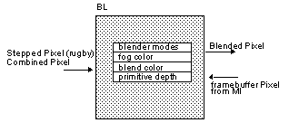
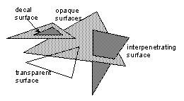

|
|
BL: Blender
The BL takes the combined pixels and blends them against the framebuffer pixels. Transparency is accomplished by blending against the framebuffer color pixels. Polygon edge antialiasing is performed, in part, by the BL using conditional color blending based on depth range. The BL can also perform fog operations in two-cycle mode.
Figure 12.7.1 Blender State and Input/Output
Surface Types
Figure 12.7.2 Surface Types
Antialiasing Modes
The antialiasing scheme properly antialiases most pixels; only a small set of corner cases have errors and are negligible. This algorithm requires ordered rendering sorted by surface or line types. Here is the rendering order and surface/line types for z-buffer antialiasing mode:
Note: There is an additional optimization discussed later; if z-buffered surfaces in the scene are rendered in approximately front-to-backorder, the fill rate is improved because the z-buffer test is a read only (no write) for obscured pixels.
Besides the antialiased z-buffer rendering mode, the other three combinations also exist: antialiased/not z-buffered, z-buffered/not antialiased, not z-buffer/not antialiased.
Table 1 One-Cycle Mode gsDPSetRenderMode(mode1, mode2)
Note: Even if you are only in one-cycle mode, mode2 should be programmed. Mode2 value is always mode1 appended with “2”.
Table 2 Two-Cycle Mode gsDPSetRenderMode(mode1, mode2)
Note: When setting the cycle type to G_CYC_FILL or G_CYC_COPY, make sure to use the command g*DPSetRenderMode(G_RM_NOOP, G_RM_NOOP2), to guarantee that the blender is in a safe state.
BL Internal Color Registers
Table 3 gsDPSetFogColor(r, g, b, a) gsDPSetBlendColor(r, g, b, a)
Note: When using mode G_AC_THRESHOLD, alpha is thresholded against blend color alpha.
Note: Another way to do billboard cutouts which often provides better antialiasing is ti turn Alpha Compare off (G_AC_NONE) and instead use one of the TEX_EDGE render modes, such as G_RM_AA_ZB_TEX_EDGE.
Using Fog

The BL can perform different conditional color-blending and z-buffer updating. Therefore, it can handle semantically different surface and line types. Figure 12.7.2 illustrates these types.

The most important feature of the BL is its participation in antialiasing. Basically, the BL conditionally blends or writes pixels into the framebuffer based on depth range. Then the video display logic applies a spatial filter to account for surrounding background colors to produce antialiased silhouette edges.
Parameter
Value
mode1
G_RM_FOG_SHADE_A
G_RM_FOG_PRIM_A
G_RM_PASS
or one of the primitive rendering modes,
e.g. G_RM_AA_ZB_OPA_SURF
mode2
e.g. G_RM_AA_ZB_OPA_SURF2
Parameter
Value
mode1
G_RM_FOG_SHADE_A
G_RM_FOG_PRIM_A
G_RM_PASS
mode2
same as one cycle mode mode2 values
BL has two internal color registers, fog and blend color. These values are programmable and can be used for geometry with fog or constant transparency.
Parameter
Value
r, g, b, a
color
Parameter
Value
mode
G_AC_NONE
G_AC_THRESHOLD
G_AC_DITHER
The blender performs the fog operation. Fog is described fully in Section 11.8, “Vertex Fog State”. Fog is performed by the RSP and the RDP in cooperation. The RSP takes the z value and places it in the alpha channel of each pixel. The RDP then uses this alpha channel to blend the color from the color combiner with the fog color. The larger the Z value (the farther the pixel is from the viewers eye) the closer the pixel’s color gets to the fog color. The RSP part of this operation is enabled with the gSPSetGeometryMode:
gsSPSetGeometryMode(G_FOG),
and can be adjusted with gsSPFogPosition:
gsSPFogPosition(FOG_MIN, FOG_MAX),
The RDP part of fogging is enabled by telling the blender how to use Alpha. Fog can be used in one cycle mode for non-antialiased opaque surfaces only:
/* 1cycle mode */ gsDPSetCycleType(G_CYC_1CYCLE), /* blend fog in ZB mode (non-AA OPA_SURF modes only) */ gsDPSetRenderMode(G_RM_FOG_SHADE_A,G_RM_ZB_OPA_SURF2), /* set the fog color */ gsDPSetFogColor(RED,GREEN,BLUE, ALPHA), /* setup the RSP */ gsSPFogPosition(FOG_MIN, FOG_MAX) gsSPSetGeometryMode(G_FOG),
It can be used for other surface types (or with antialiasing) in 2 cycle mode:
/* 2 cycle mode */ gsDPSetCycleType(G_CYC_2CYCLE), /* blend fog. Use any standard render mode for cycle 2 */ gsDPSetRenderMode(G_RM_FOG_SHADE_A,G_RM_AA_ZB_OPA_SURF2), /* set the fog color */ gsDPSetFogColor(RED,GREEN,BLUE, ALPHA), /* setup the RSP */ gsSPFogPosition(FOG_MIN, FOG_MAX) gsSPSetGeometryMode(G_FOG),
As an alternative to G_RM_FOG_SHADE_A (for the first cycle of gsDPSetRenderMode) you can use G_RM_FOG_PRIM_A which will use the alpha value in PrimColor to set the fog value. If you use this mode, then the RSP’s part of fog is unneccessary and the gsSPFogPosition and gsSPSetGeometryMode macros are not necessary. Instead set the fog value per primitive with the gsDPSetPrimColor macro:
gsDPSetPrimColor(0,0,0,0,0, FOG_VALUE),
where the FOG_VALUE is 0 for no fog and 0xff for full-fog.
Note: Objects with FOG can still be transparent. The alpha value used to modulate fog comes from the triangle renderer. The alpha value that comes from the color combiner is independent of that renderer fog alpha. For example the color combiner can be set to use the alpha value from a texture map, and fog will still work with the alpha value from the renderer. You cannot, however, use vertex alpha with fog. The per alpha supplied in the vertices will be ignored and if the color combiner selects a SHADE alpha, it will get the fog alpha value instead (not what was intended).
Depth Source
The depth value used in the depth buffer compare is generally taken from the Z value of the pixel, determined by interpolating the z values at the 3 vertices of the triangle containing the pixel. However it is sometimes desireable to set the Z value which will be used for an entire primitive. This is actually neccessary when rendering Z-buffered rectangles (gDPFillRect and gSPTextureRect) since these primitives do not have a Z value associated with them. To use a single Z value for an entire primitive the Z value is placed in the PrimDepth register and the Z source Select is set to get Z from the PrimDepth register:
gsDPSetDepthSource(G_ZS_PRIM), gsDPSetPrimDepth(z, dz),
The value to use for z is the screen Z position of the object you are rendering. This is a value ranging from 0x0000 to 0x7fff, where 0x0000 usually corresponds to the near clipping plane and 0x7fff usually corresponds to the far clipping plane. To synchronize Z for PrimDepth with a Z for a triangle it is important to understand how the triangle’s Z gets computed. The modeling coordinate vertex is multiplied by the modelview and projection matrices resulting in a 4 componant homogeneous coordinate (x,y,z,w). The screen Z value is computed by the RSP as
screenZ = 32*((z/w)*Viewport.vscale[2] + Viewport.vtrans[2])
Note: Viewport.vscale and Viewport.vtrans[2] are usually both G_MAXZ/2 = 0x1ff, which makes the formula: screenZ=(z/w)*0x3fe0 + 0x3fe0. Since (z/w) ranges from -1.0 to +1.0 the result will range from 0x0 to 0x7fc0.
Note: For microcode progrmmers: The 32* part of this equation is done in the setup microcode. The other parts of this equation are done in the vertex processing microcode.
So if you want to position a rectangle at a specific modeling coordinate position, run the modeling ccordinate of the position through the modelview and projection matrix, and then comput its screenZ value based upon the formula above. This is the value to use for z in the gsDPSetPrimDepth command.
The dz value should be set to 0. This value is used for antialiasing and objects drawn in decal render mode and must always be a power of 2 (0, 1, 2, 4, 8, ... 0x4000). If you are using decal mode and part of the decalled object is not being rendered correctly, try setting this to powers of 2. Otherwise use 0.
|
Copyright © 1999 Nintendo of America Inc. All Rights Reserved Nintendo and N64 are registered trademarks of Nintendo Last Updated January, 1999 |